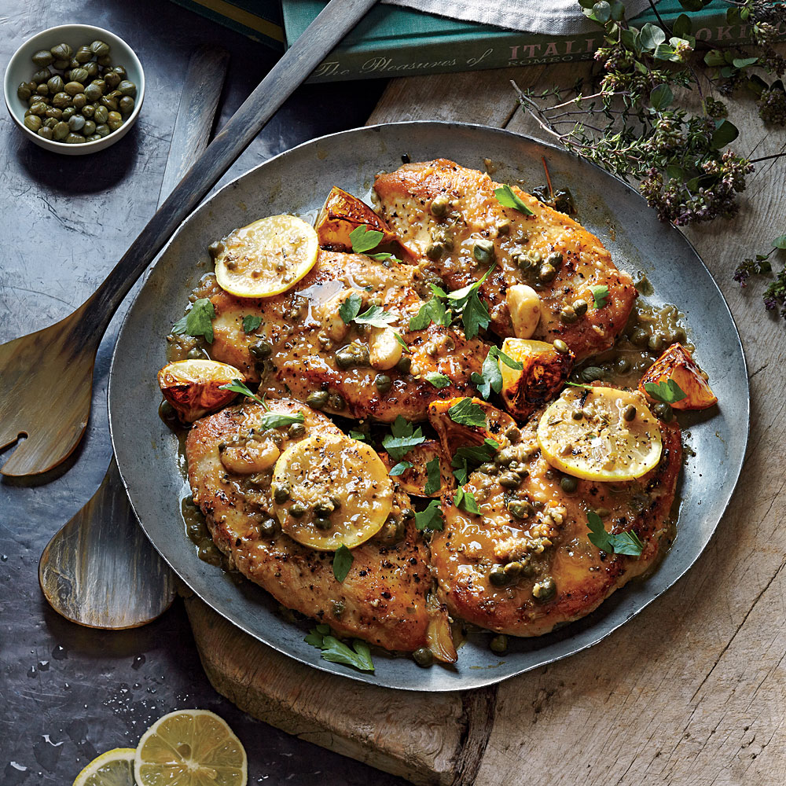

Chicken Piccata

Serves 4 (serving size: 1 chicken breast half and about 3 tablespoons sauce)
Lightly charring the lemon slices intensifies their flavor and creates a gorgeous look for this...
Ingridients
- 2 small lemons, cut into thin rounds
- 1 and a half teaspoons sugar
- 4 garlic cloves, halved
- 4 (6-ounce) skinless, boneless chicken breast halves, pound
- half a teaspoon kosher salt, divided
Procedure
- Combine lemon slices, sugar, and garlic in a medium bowl.
- Sprinkle chicken with 3/8 teaspoon salt and pepper.
Heat a large skillet over medium-high heat.
Add 2 teaspoons oil; swirl to coat.
Add chicken to pan; cook 4 minutes on each side or until done.
Place chicken on a plate.
Add remaining 1 teaspoon oil to pan; swirl to coat.
Add lemon mixture to pan;
cook 1 minute or until lemon slices are lightly browned,
turning occasionally. Return lemon mixture to bowl.
- Wipe pan with paper towels.
Heat pan over medium heat.
Add 1 1/2 teaspoons butter to pan; swirl until butter melts.
Add shallot, 1/2 teaspoon grated garlic, oregano sprig, and thyme sprig; cook 1 minute.
Add wine to pan, scraping pan to loosen browned bits.
Bring to a boil; cook 3 minutes or until liquid almost evaporates.
Add remaining 1/8 teaspoon salt, stock, and flour to pan, stirring with a whisk.
Bring to a boil; reduce heat, and simmer 3 minutes or until liquid is reduced to about 2/3 cup.
Remove pan from heat; discard oregano and thyme sprigs.
Stir in remaining 1 1/2 tablespoons butter and capers, stirring until butter melts.
Return chicken and any juices to pan; turn to coat with sauce.
Top chicken with lemon mixture. Sprinkle with parsley.
Back to homepage